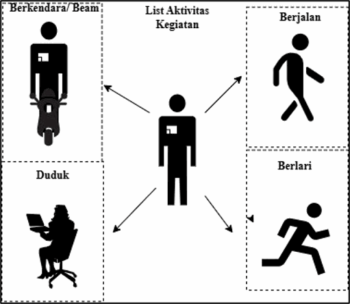
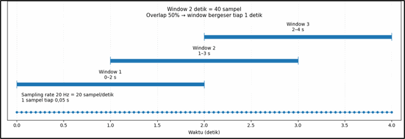
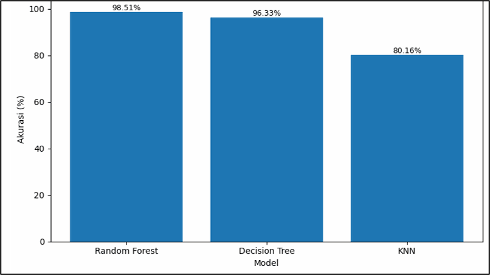
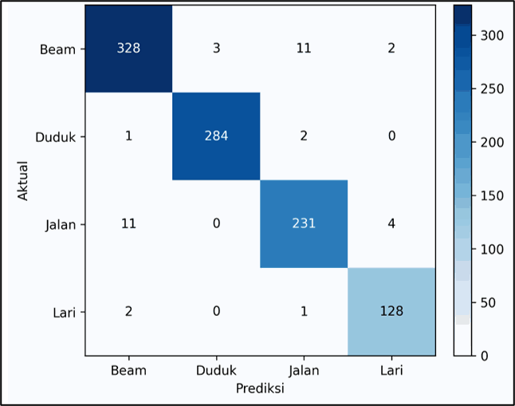
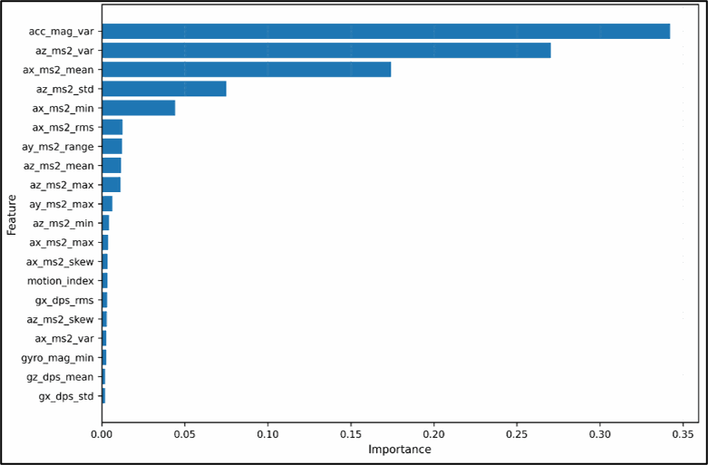

Project · Machine Learning
Human Activity Recognition (HAR)
Part of my undergraduate final project: "Development of a Wearable Air Quality Monitoring System with Human Activity Recognition Integration for Analyzing the Effect of Motion on Particulate Measurement". This page covers the HAR model. Other parts:

Goal
Wearable air quality readings are vulnerable to motion artifacts. To study how much body movement affects the readings, the system needs to recognise what the user is doing. A Human Activity Recognition (HAR) model was developed to classify four activities: sitting, walking, running and riding.
Data acquisition and windowing
Data came from a 6-axis Inertial Measurement Unit (accelerometer and gyroscope), recorded from 10 subjects. More than 101,000 raw samples at 20 Hz were segmented with 2-second windows and 50% overlap, producing a structured dataset of 5,039 windows.

Feature engineering and Motion Index
73 statistical features (such as mean, standard deviation, variance, RMS, skewness and kurtosis) were extracted from every window.
A Motion Index was also calculated from the standard deviation of acceleration magnitude, measuring movement intensity (sitting ≈ 0.10, running ≈ 19.54). This value is later correlated with the particulate sensor's deviation.
Model selection
Random Forest, Decision Tree and K-Nearest Neighbors were trained. Random Forest reached the highest accuracy (98.51%) but was too complex and memory-hungry for a microcontroller. Decision Tree was chosen as the final model: 96.33% accuracy with a much lighter structure that can be converted into if-else logic in C/C++ firmware.

Evaluation
The classification report averaged 0.96 for precision, recall and F1-score. The model separated contrasting activities (sitting vs. running) well, with some overlap between walking and riding because of similar vibration at certain moments.
Feature importance showed that accelerometer magnitude variance (acc_mag_var) carried the most weight, indicating that acceleration fluctuation is the strongest predictor of movement pattern.

